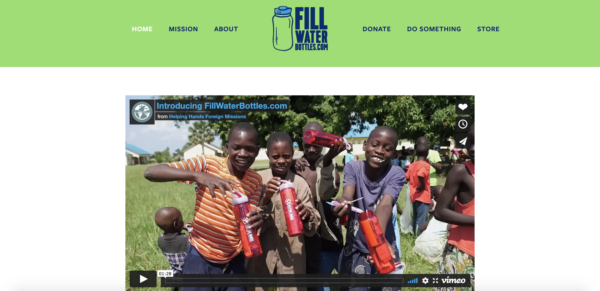
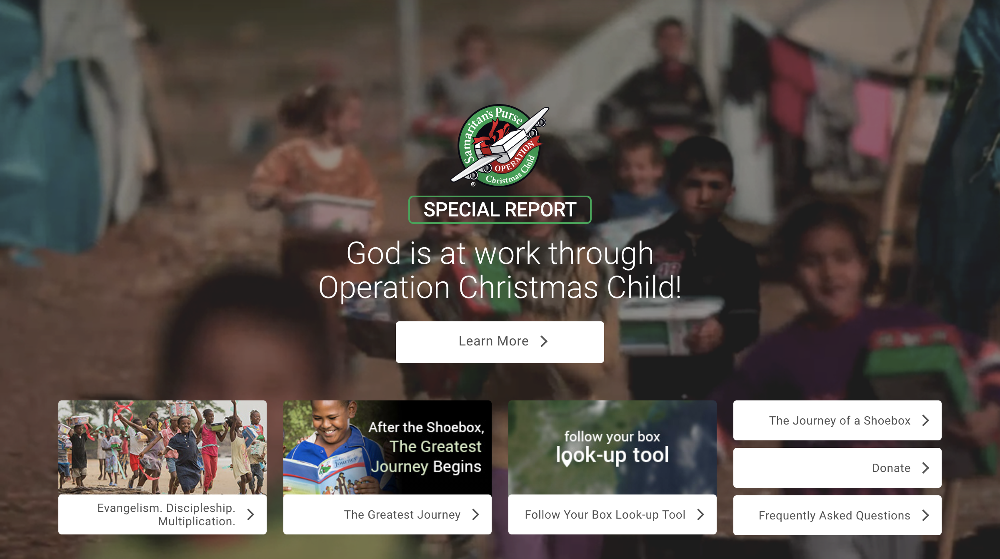
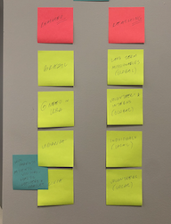

Primary + Secondary Research
Researching the client and users.
Primary Research
FillWaterBottles.com is a non-profit focused on meeting practical needs of individuals around the world through the gift of a water bottle. Groups and individuals purchase water bottles and a few small, essential items to fill the bottles. They are then transported to areas in need and delivered to homes, schools, medical clinics, and individuals. What I want to understand from my initial research is the full expanse of parties involved in making this process work.
Helping Hands Foreign Missions
HHFM is the larger organization that encompasses FillWaterBottles.com. They are the administration that locates target areas in need, and organizes groups to transport bottles.
Volunteers
Volunteers play a large roll in the organization. They account for the roles filled from packing the bottles, to transporting them, to delivering them.
Donors
HHFM and FillWaterBottles.com has many donors who may be physically unable to pack or deliver bottles themselves, but give so the work can be accomplished.
Secondary Research
A similar mission and organization is Operation Christmas Child. This organization employs volunteers across the world to pack both practical and fun items in a shoebox to be delivered to vulnerable children.
 Next, I specified every group that would possibly be related to the organization. Since FillWaterBottles.com is a global organization, there is a lot of involvement from vastly different groups. Schools in the US contribute help by having teams and clubs pack bottles. They are also great spaces for recruiting volunteers and interns. Schools across the globe are often easy to partner with to distribute bottles. Churches play a large roll in the work, and account for much of the volunteer hours. Small groups, youth groups, and even individual members play vital roles in different steps of the process; but churches as a whole help market the organization by word-of-mouth.
Next, I specified every group that would possibly be related to the organization. Since FillWaterBottles.com is a global organization, there is a lot of involvement from vastly different groups. Schools in the US contribute help by having teams and clubs pack bottles. They are also great spaces for recruiting volunteers and interns. Schools across the globe are often easy to partner with to distribute bottles. Churches play a large roll in the work, and account for much of the volunteer hours. Small groups, youth groups, and even individual members play vital roles in different steps of the process; but churches as a whole help market the organization by word-of-mouth.
The third aspect of my stick note research focuses on direct involvement specifics. I broke the list down to two categories of "reached" and "reaching". Those in the "reached" category are sites that FillWaterBottles.com is currently stationed in. Those in the "reaching" category are the ones taking action to get the work done. Currently, my organization is working in Uganda, Brazil, Bolivia, and various locations in the United States. In the "reaching" category are churches, volunteer stationed locally in the US, as well as volunteers working globally.